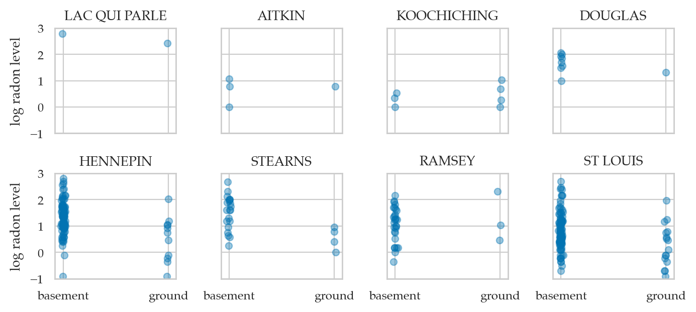
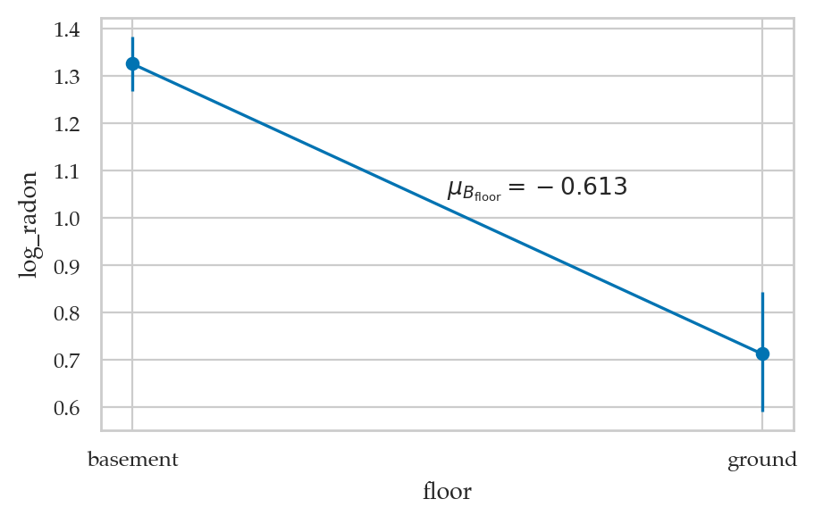
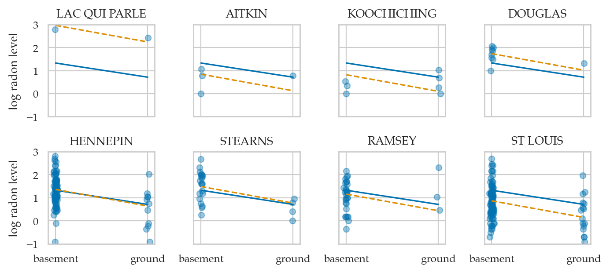
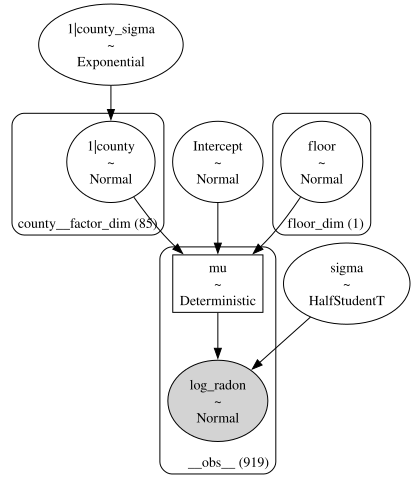
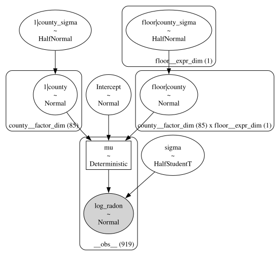

Section 5.5 — Hierarchical models#
This notebook contains the code examples from Section 5.5 Hierarchical models from the No Bullshit Guide to Statistics.
See also:
https://mc-stan.org/users/documentation/case-studies/radon_cmdstanpy_plotnine.html#data-prep
https://www.pymc.io/projects/examples/en/latest/generalized_linear_models/multilevel_modeling.html
Notebook setup#
# load Python modules
import os
import numpy as np
import pandas as pd
import seaborn as sns
import matplotlib.pyplot as plt
# Figures setup
plt.clf() # needed otherwise `sns.set_theme` doesn"t work
from plot_helpers import RCPARAMS
RCPARAMS.update({"figure.figsize": (5, 3)}) # good for screen
# RCPARAMS.update({"figure.figsize": (5, 1.6)}) # good for print
sns.set_theme(
context="paper",
style="whitegrid",
palette="colorblind",
rc=RCPARAMS,
)
# High-resolution please
%config InlineBackend.figure_format = "retina"
# Where to store figures
from ministats.utils import savefigure
DESTDIR = "figures/bayes/hierarchical"
WARNING (pytensor.tensor.blas): Using NumPy C-API based implementation for BLAS functions.
<Figure size 640x480 with 0 Axes>
# set random seed for repeatability
np.random.seed(42)
#######################################################
# silence statsmodels kurtosistest warning when using n < 20
import warnings
warnings.filterwarnings("ignore", category=FutureWarning)
Definitions#
Hierarchical (multilevel) models#
Model formula#
Radon dataset#
https://bambinos.github.io/bambi/notebooks/radon_example.html
Description: Contains measurements of radon levels in homes across various counties.
Source: Featured in Andrew Gelman and Jennifer Hill’s book Data Analysis Using Regression and Multilevel/Hierarchical Models.
Application: Demonstrates partial pooling and varying intercepts/slopes in hierarchical modeling.
Loading the data#
radon = pd.read_csv("../datasets/radon.csv")
radon.head()
| idnum | state | county | floor | log_radon | log_uranium | |
|---|---|---|---|---|---|---|
| 0 | 5081 | MN | AITKIN | ground | 0.788457 | -0.689048 |
| 1 | 5082 | MN | AITKIN | basement | 0.788457 | -0.689048 |
| 2 | 5083 | MN | AITKIN | basement | 1.064711 | -0.689048 |
| 3 | 5084 | MN | AITKIN | basement | 0.000000 | -0.689048 |
| 4 | 5085 | MN | ANOKA | basement | 1.131402 | -0.847313 |
from ministats.book.figures import plot_counties
sel_counties = [
"LAC QUI PARLE", "AITKIN", "KOOCHICHING", "DOUGLAS",
"HENNEPIN", "STEARNS", "RAMSEY", "ST LOUIS",
]
plot_counties(radon, counties=sel_counties);
---------------------------------------------------------------------------
ModuleNotFoundError Traceback (most recent call last)
Cell In[6], line 1
----> 1 from ministats.book.figures import plot_counties
2 sel_counties = [
3 "LAC QUI PARLE", "AITKIN", "KOOCHICHING", "DOUGLAS",
4 "HENNEPIN", "STEARNS", "RAMSEY", "ST LOUIS",
5 ]
6 plot_counties(radon, counties=sel_counties);
ModuleNotFoundError: No module named 'ministats.book'
# FIGURES ONLY
sel_counties = [
"LAC QUI PARLE", "AITKIN", "KOOCHICHING", "DOUGLAS",
"HENNEPIN", "STEARNS", "RAMSEY", "ST LOUIS",
]
fig = plot_counties(radon, counties=sel_counties, figsize=(7,3.2))
filename = os.path.join(DESTDIR, "sel_counties_scatter_only.pdf")
savefigure(fig, filename)
Saved figure to figures/bayes/hierarchical/sel_counties_scatter_only.pdf
Saved figure to figures/bayes/hierarchical/sel_counties_scatter_only.png
{kind=link}

Example 1: complete pooling model#
= common linear regression model for all counties
Bayesian model#
We can pool all the data and estimate one big regression to asses the influence of the floor variable on radon levels across all counties.
The variable \(x\) corresponds to the floor column,
with \(0\) representing basement, and \(1\) representing ground floor.
By ignoring the county feature, we do not differenciate on counties.
Bambi model#
import bambi as bmb
priors1 = {
"Intercept": bmb.Prior("Normal", mu=1, sigma=2),
"floor": bmb.Prior("Normal", mu=0, sigma=5),
"sigma": bmb.Prior("HalfStudentT", nu=4, sigma=1),
}
mod1 = bmb.Model(formula="log_radon ~ 1 + floor",
family="gaussian",
link="identity",
priors=priors1,
data=radon)
mod1
Formula: log_radon ~ 1 + floor
Family: gaussian
Link: mu = identity
Observations: 919
Priors:
target = mu
Common-level effects
Intercept ~ Normal(mu: 1.0, sigma: 2.0)
floor ~ Normal(mu: 0.0, sigma: 5.0)
Auxiliary parameters
sigma ~ HalfStudentT(nu: 4.0, sigma: 1.0)
mod1.build()
mod1.graph()
# # FIGURES ONLY
# filename = os.path.join(DESTDIR, "example1_complete_pooling_mod1_graph")
# mod1.graph(name=filename, fmt="png", dpi=300)

Model fitting and analysis#
idata1 = mod1.fit()
Auto-assigning NUTS sampler...
Initializing NUTS using jitter+adapt_diag...
Multiprocess sampling (4 chains in 4 jobs)
NUTS: [sigma, Intercept, floor]
Sampling 4 chains for 1_000 tune and 1_000 draw iterations (4_000 + 4_000 draws total) took 2 seconds.
import arviz as az
az.summary(idata1, kind="stats")
| mean | sd | hdi_3% | hdi_97% | |
|---|---|---|---|---|
| Intercept | 1.326 | 0.031 | 1.269 | 1.384 |
| floor[ground] | -0.613 | 0.074 | -0.750 | -0.474 |
| sigma | 0.824 | 0.019 | 0.789 | 0.861 |
az.plot_posterior(idata1);
{kind=link}
# # FIGURES ONLY
# az.plot_posterior(idata1, round_to=2, figsize=(6,1.8));
# filename = os.path.join(DESTDIR, "example1_posterior.pdf")
# savefigure(plt.gcf(), filename)
fig, axs = bmb.interpret.plot_predictions(mod1, idata1, conditional="floor")
means1 = az.summary(idata1, kind="stats")["mean"]
y0 = means1["Intercept"]
y1 = means1["Intercept"] + means1["floor[ground]"]
sns.lineplot(x=[0,1], y=[y0,y1], ax=axs[0]);
midpoint = [0.5, (y0+y1)/2 + 0.03]
slope = means1["floor[ground]"].round(3)
axs[0].annotate("$\\mu_{B_{\\text{floor}}}=%.3f$" % slope, midpoint);
Default computed for conditional variable: floor
{kind=link}

# # FIGURES ONLY
# fig, axs = bmb.interpret.plot_predictions(mod1, idata1, conditional="floor",
# fig_kwargs={"figsize":(3.8,2.6)})
# means1 = az.summary(idata1, kind="stats")["mean"]
# y0 = means1["Intercept"]
# y1 = means1["Intercept"] + means1["floor[ground]"]
# sns.lineplot(x=[0,1], y=[y0,y1], ax=axs[0]);
# midpoint = [0.5, (y0+y1)/2 + 0.03]
# slope = means1["floor[ground]"].round(3)
# axs[0].annotate("$\\mu_{B_{\\text{floor}}}=%.3f$" % slope, midpoint);
# filename = os.path.join(DESTDIR, "example1_basement_ground_slope.pdf")
# savefigure(plt.gcf(), filename)
Conclusion#
not using group membership, so we have lots of bias
Example 2: no pooling model#
= separate intercept for each county
Bayesian model#
If we treat different counties as independent, so each one gets an intercept term:
Bambi model#
priors2 = {
"county": bmb.Prior("Normal", mu=0, sigma=10),
"floor": bmb.Prior("Normal", mu=0, sigma=30),
"sigma": bmb.Prior("HalfStudentT", nu=4, sigma=1),
}
mod2 = bmb.Model("log_radon ~ 0 + county + floor",
family="gaussian",
link="identity",
priors=priors2,
data=radon)
mod2
Formula: log_radon ~ 0 + county + floor
Family: gaussian
Link: mu = identity
Observations: 919
Priors:
target = mu
Common-level effects
county ~ Normal(mu: 0.0, sigma: 10.0)
floor ~ Normal(mu: 0.0, sigma: 30.0)
Auxiliary parameters
sigma ~ HalfStudentT(nu: 4.0, sigma: 1.0)
mod2.build()
mod2.graph()
# # FIGURES ONLY
# filename = os.path.join(DESTDIR, "example2_no_pooling_mod2_graph")
# mod2.graph(name=filename, fmt="png", dpi=300)

Model fitting and analysis#
idata2 = mod2.fit()
Auto-assigning NUTS sampler...
Initializing NUTS using jitter+adapt_diag...
Multiprocess sampling (4 chains in 4 jobs)
NUTS: [sigma, county, floor]
Sampling 4 chains for 1_000 tune and 1_000 draw iterations (4_000 + 4_000 draws total) took 5 seconds.
idata2sel = idata2.sel(county_dim=sel_counties)
az.summary(idata2sel, kind="stats")
| mean | sd | hdi_3% | hdi_97% | |
|---|---|---|---|---|
| county[LAC QUI PARLE] | 2.959 | 0.556 | 1.941 | 4.052 |
| county[AITKIN] | 0.843 | 0.373 | 0.122 | 1.546 |
| county[KOOCHICHING] | 0.818 | 0.286 | 0.253 | 1.326 |
| county[DOUGLAS] | 1.733 | 0.258 | 1.252 | 2.222 |
| county[HENNEPIN] | 1.361 | 0.075 | 1.228 | 1.503 |
| county[STEARNS] | 1.488 | 0.151 | 1.189 | 1.760 |
| county[RAMSEY] | 1.157 | 0.138 | 0.898 | 1.404 |
| county[ST LOUIS] | 0.868 | 0.072 | 0.734 | 1.010 |
| floor[ground] | -0.718 | 0.074 | -0.861 | -0.580 |
| sigma | 0.757 | 0.018 | 0.720 | 0.790 |
axs = az.plot_forest(idata2sel, combined=True, figsize=(6,2.6))
axs[0].set_xticks(np.arange(-0.5,4.6,0.5))
axs[0].set_title(None);
{kind=link}
plot_counties(radon, idata_cp=idata1, idata_np=idata2);
{kind=link}
# FIGURES ONLY
sel_counties = [
"LAC QUI PARLE", "AITKIN", "KOOCHICHING", "DOUGLAS",
"HENNEPIN", "STEARNS", "RAMSEY", "ST LOUIS",
]
fig = plot_counties(radon, idata_cp=idata1, idata_np=idata2,
counties=sel_counties, figsize=(7,3.2))
filename = os.path.join(DESTDIR, "sel_counties_complete_and_no_pooling.pdf")
savefigure(fig, filename)
Saved figure to figures/bayes/hierarchical/sel_counties_complete_and_no_pooling.pdf
Saved figure to figures/bayes/hierarchical/sel_counties_complete_and_no_pooling.png
{kind=link}

# fig, axs = bmb.interpret.plot_predictions(mod2, idata2, ["floor", "county"]);
# axs[0].get_legend().remove()
# post2 = idata2["posterior"]
# unpooled_means = post2.mean(dim=("chain", "draw"))
# unpooled_hdi = az.hdi(idata2)
# unpooled_means_iter = unpooled_means.sortby("county")
# unpooled_hdi_iter = unpooled_hdi.sortby(unpooled_means_iter.county)
# _, ax = plt.subplots(figsize=(12, 5))
# unpooled_means_iter.plot.scatter(x="county_dim", y="county", ax=ax, alpha=0.9)
# ax.vlines(
# np.arange(len(radon["county"].unique())),
# unpooled_hdi_iter.county.sel(hdi="lower"),
# unpooled_hdi_iter.county.sel(hdi="higher"),
# color="orange",
# alpha=0.6,
# )
# ax.set(ylabel="Radon estimate", ylim=(-2, 4.5))
# ax.tick_params(rotation=90);
Conclusion#
treating each group independently, so we have lots of variance
Example 3: hierarchical model#
= partial pooling model = varying intercepts model
Bayesian hierarchical model#
The partial pooling formula estimates per-county intercepts which drawn
from the same distribution which is estimated jointly with the rest of
the model parameters. The 1 is the intercept co-efficient. The
estimates across counties will all have the same slope.
log_radon ~ 1 + (1|county_id) + floor
There is a middle ground to both of these extremes. Specifically, we may assume that the intercepts are different for each county as in the unpooled case, but they are drawn from the same distribution. The different counties are effectively sharing information through the common prior.
NOTE: some counties have very few sample; the hierarchical model will provide “shrinkage” for these groups, and use global information learned from all counties
radon["log_radon"].describe()
count 919.000000
mean 1.224623
std 0.853327
min -2.302585
25% 0.641854
50% 1.280934
75% 1.791759
max 3.875359
Name: log_radon, dtype: float64
radon.groupby("floor")["log_radon"].describe()
| count | mean | std | min | 25% | 50% | 75% | max | |
|---|---|---|---|---|---|---|---|---|
| floor | ||||||||
| basement | 766.0 | 1.326744 | 0.782709 | -2.302585 | 0.788457 | 1.360977 | 1.883253 | 3.875359 |
| ground | 153.0 | 0.713349 | 0.999376 | -2.302585 | 0.095310 | 0.741937 | 1.308333 | 3.234749 |
Bambi model#
priors3 = {
"Intercept": bmb.Prior("Normal", mu=1, sigma=2),
"floor": bmb.Prior("Normal", mu=0, sigma=5),
"1|county": bmb.Prior("Normal", mu=0, sigma=bmb.Prior("Exponential", lam=1)),
# "1|county": bmb.Prior("Normal", mu=0, sigma=bmb.Prior("HalfNormal", sigma=2)),
"sigma": bmb.Prior("HalfStudentT", nu=4, sigma=1),
# "sigma": bmb.Prior("Exponential", lam=1),
# "sigma": bmb.Prior("HalfNormal", sigma=10), # from PyStan tutorial
# "sigma": bmb.Prior("Uniform", lower=0, upper=100), # from PyMC example
}
mod3 = bmb.Model(formula="log_radon ~ 1 + (1|county) + floor",
priors=priors3,
data=radon,
noncentered=False)
mod3
Formula: log_radon ~ 1 + (1|county) + floor
Family: gaussian
Link: mu = identity
Observations: 919
Priors:
target = mu
Common-level effects
Intercept ~ Normal(mu: 1.0, sigma: 2.0)
floor ~ Normal(mu: 0.0, sigma: 5.0)
Group-level effects
1|county ~ Normal(mu: 0.0, sigma: Exponential(lam: 1.0))
Auxiliary parameters
sigma ~ HalfStudentT(nu: 4.0, sigma: 1.0)
mod3.build()
mod3.graph()
# # FIGURES ONLY
# filename = os.path.join(DESTDIR, "example3_partial_pooling_mod3_graph")
# mod3.graph(name=filename, fmt="png", dpi=300)

Model fitting and analysis#
idata3 = mod3.fit()
Auto-assigning NUTS sampler...
Initializing NUTS using jitter+adapt_diag...
Multiprocess sampling (4 chains in 4 jobs)
NUTS: [sigma, Intercept, floor, 1|county_sigma, 1|county]
Sampling 4 chains for 1_000 tune and 1_000 draw iterations (4_000 + 4_000 draws total) took 5 seconds.
The group level parameters
idata3sel = idata3.sel(county__factor_dim=sel_counties)
az.summary(idata3sel, kind="stats")
| mean | sd | hdi_3% | hdi_97% | |
|---|---|---|---|---|
| 1|county[LAC QUI PARLE] | 0.416 | 0.296 | -0.137 | 0.976 |
| 1|county[AITKIN] | -0.273 | 0.250 | -0.736 | 0.204 |
| 1|county[KOOCHICHING] | -0.377 | 0.222 | -0.812 | 0.030 |
| 1|county[DOUGLAS] | 0.168 | 0.202 | -0.209 | 0.556 |
| 1|county[HENNEPIN] | -0.097 | 0.088 | -0.264 | 0.068 |
| 1|county[STEARNS] | 0.017 | 0.144 | -0.262 | 0.275 |
| 1|county[RAMSEY] | -0.265 | 0.133 | -0.515 | -0.020 |
| 1|county[ST LOUIS] | -0.570 | 0.087 | -0.735 | -0.407 |
| 1|county_sigma | 0.332 | 0.046 | 0.243 | 0.416 |
| Intercept | 1.462 | 0.053 | 1.368 | 1.564 |
| floor[ground] | -0.693 | 0.070 | -0.824 | -0.563 |
| sigma | 0.757 | 0.019 | 0.721 | 0.791 |
The intercept offsets for each county are:
# sum( idata3["posterior"]["1|county"].stack(sample=("chain","draw")).values.mean(axis=1) )
# az.plot_forest(idata3, combined=True, figsize=(7,2),
# var_names=["Intercept", "floor", "1|county_sigma", "sigma"]);
#######################################################
axs = az.plot_forest(idata3sel, var_names=["Intercept", "1|county", "floor", "1|county_sigma", "sigma"], combined=True, figsize=(6,3))
# axs = az.plot_forest(idata3sel, combined=True, figsize=(6,3))
axs[0].set_xticks(np.arange(-0.8,1.6,0.2))
axs[0].set_title(None);
{kind=link}
# az.plot_forest(idata3, var_names=["1|county"], combined=True);
Compare models#
Compare complete pooling, no pooling, and partial pooling models
{kind=link}
# # FIGURES ONLY
# fig = plot_counties(radon, idata_cp=idata1, idata_np=idata2, idata_pp=idata3, figsize=(7,3.2))
# filename = os.path.join(DESTDIR, "sel_counties_all_models.pdf")
# savefigure(fig, filename)
Conclusions#
Explanations#
Prior selection for hierarchical models#
?
Varying intercepts and slopes model#
= Group-specific slopes We can also make beta_x group-specific
The varying-slope, varying intercept model adds floor to the
group-level co-efficients. Now estimates across counties will all have
varying slope.
log_radon ~ floor + (1 + floor | county_id)
#######################################################
mod4 = bmb.Model("log_radon ~ (1 + floor | county)",
data=radon,
noncentered=False)
mod4
Formula: log_radon ~ (1 + floor | county)
Family: gaussian
Link: mu = identity
Observations: 919
Priors:
target = mu
Common-level effects
Intercept ~ Normal(mu: 1.2246, sigma: 2.1322)
Group-level effects
1|county ~ Normal(mu: 0.0, sigma: HalfNormal(sigma: 2.1322))
floor|county ~ Normal(mu: 0.0, sigma: HalfNormal(sigma: 5.7237))
Auxiliary parameters
sigma ~ HalfStudentT(nu: 4.0, sigma: 0.8529)
mod4.build()
mod4.graph()
# # FIGURES ONLY
# filename = os.path.join(DESTDIR, "varying_int_and_slopes_mod4_graph")
# mod4.graph(name=filename, fmt="png", dpi=300)

idata4 = mod4.fit()
Auto-assigning NUTS sampler...
Initializing NUTS using jitter+adapt_diag...
Multiprocess sampling (4 chains in 4 jobs)
NUTS: [sigma, Intercept, 1|county_sigma, 1|county, floor|county_sigma, floor|county]
Sampling 4 chains for 1_000 tune and 1_000 draw iterations (4_000 + 4_000 draws total) took 6 seconds.
az.autocorr(idata4["posterior"]["sigma"].values.flatten())[0:10]
array([ 1.00000000e+00, -2.62705585e-01, 1.08081854e-01, -1.96115602e-02,
4.13814793e-03, 1.35571030e-02, -1.68185782e-02, 3.62568872e-02,
-1.88273527e-02, 1.75133087e-05])
az.summary(idata4)
| mean | sd | hdi_3% | hdi_97% | mcse_mean | mcse_sd | ess_bulk | ess_tail | r_hat | |
|---|---|---|---|---|---|---|---|---|---|
| 1|county[AITKIN] | -0.320 | 0.261 | -0.803 | 0.190 | 0.003 | 0.003 | 6452.0 | 2792.0 | 1.01 |
| 1|county[ANOKA] | -0.470 | 0.115 | -0.676 | -0.241 | 0.002 | 0.001 | 4897.0 | 3013.0 | 1.00 |
| 1|county[BECKER] | -0.045 | 0.297 | -0.625 | 0.507 | 0.003 | 0.005 | 8165.0 | 2745.0 | 1.00 |
| 1|county[BELTRAMI] | 0.033 | 0.258 | -0.469 | 0.507 | 0.003 | 0.004 | 6733.0 | 2865.0 | 1.00 |
| 1|county[BENTON] | -0.050 | 0.265 | -0.547 | 0.438 | 0.003 | 0.005 | 8548.0 | 2815.0 | 1.00 |
| ... | ... | ... | ... | ... | ... | ... | ... | ... | ... |
| floor|county[ground, WINONA] | -1.341 | 0.422 | -2.159 | -0.585 | 0.006 | 0.005 | 4454.0 | 2700.0 | 1.00 |
| floor|county[ground, WRIGHT] | -0.356 | 0.510 | -1.324 | 0.553 | 0.005 | 0.007 | 8754.0 | 3277.0 | 1.00 |
| floor|county[ground, YELLOW MEDICINE] | 0.014 | 0.737 | -1.401 | 1.384 | 0.008 | 0.013 | 8663.0 | 3040.0 | 1.00 |
| floor|county_sigma[ground] | 0.738 | 0.108 | 0.524 | 0.935 | 0.003 | 0.002 | 1149.0 | 1785.0 | 1.01 |
| sigma | 0.747 | 0.019 | 0.714 | 0.783 | 0.000 | 0.000 | 5777.0 | 3363.0 | 1.00 |
174 rows × 9 columns
# idata4["posterior"]
idata4sel = idata4.sel(county__factor_dim=sel_counties)
axs = az.plot_forest(idata4sel, combined=True, var_names=["1|county"], figsize=(6,2))
axs[0].set_title(None);
{kind=link}
idata4sel = idata4.sel(county__factor_dim=sel_counties)
axs = az.plot_forest(idata4sel, combined=True, var_names=["floor|county"], figsize=(6,2))
axs[0].set_title(None);
{kind=link}
other_vars = ['Intercept', '1|county_sigma', 'floor|county_sigma', 'sigma']
axs = az.plot_forest(idata4, combined=True, var_names=other_vars, figsize=(6,1))
axs[0].set_title(None);
{kind=link}
Frequentist multilevel models#
We can use statsmodels to fit multilevel models too.
Varying intercepts model using statsmodels#
import statsmodels.formula.api as smf
sm1 = smf.mixedlm("log_radon ~ 0 + floor", # Fixed effects (no intercept and floor as a fixed effect)
groups="county", # Grouping variable for random effects
re_formula="1", # Random effects = intercept
data=radon)
res1 = sm1.fit()
res1.summary()
| Model: | MixedLM | Dependent Variable: | log_radon |
| No. Observations: | 919 | Method: | REML |
| No. Groups: | 85 | Scale: | 0.5709 |
| Min. group size: | 1 | Log-Likelihood: | -1085.6526 |
| Max. group size: | 116 | Converged: | Yes |
| Mean group size: | 10.8 |
| Coef. | Std.Err. | z | P>|z| | [0.025 | 0.975] | |
|---|---|---|---|---|---|---|
| floor[basement] | 1.462 | 0.052 | 28.164 | 0.000 | 1.360 | 1.563 |
| floor[ground] | 0.769 | 0.074 | 10.339 | 0.000 | 0.623 | 0.914 |
| county Var | 0.108 | 0.041 |
# slope
res1.params["floor[ground]"] - res1.params["floor[basement]"]
-0.6929937406558043
# sigma-hat
np.sqrt(res1.scale)
0.7555891484188184
# standard deviation of the variability among county-specific Intercepts
county_var = float(res1.summary().tables[1].loc["county Var","Coef."])
assert county_var != res1.params["county Var"] # BUG??
np.sqrt(county_var)
0.3286335345030997
# compare Intercept for first country in res1 to the Bayesian estimate
res1.random_effects["AITKIN"].values, \
az.summary(idata3, group="posterior",
var_names=["1|county"],
coords={"county__factor_dim":"AITKIN"}).iloc[0,0]
(array([-0.27009756]), -0.273)
Varying intercepts and slopes model using statsmodels#
sm2 = smf.mixedlm("log_radon ~ 0 + floor", # Fixed effects (no intercept and floor as a fixed effect)
groups="county", # Grouping variable for random effects
re_formula="1 + floor", # Random effects: 1 for intercept, floor for slope
data=radon)
res2 = sm2.fit()
res2.summary()
| Model: | MixedLM | Dependent Variable: | log_radon |
| No. Observations: | 919 | Method: | REML |
| No. Groups: | 85 | Scale: | 0.5567 |
| Min. group size: | 1 | Log-Likelihood: | -1084.1623 |
| Max. group size: | 116 | Converged: | Yes |
| Mean group size: | 10.8 |
| Coef. | Std.Err. | z | P>|z| | [0.025 | 0.975] | |
|---|---|---|---|---|---|---|
| floor[basement] | 1.463 | 0.054 | 26.977 | 0.000 | 1.356 | 1.569 |
| floor[ground] | 0.782 | 0.085 | 9.208 | 0.000 | 0.615 | 0.948 |
| county Var | 0.122 | 0.049 | ||||
| county x floor[T.ground] Cov | -0.040 | 0.057 | ||||
| floor[T.ground] Var | 0.118 | 0.120 |
# slope
res2.params["floor[ground]"] - res2.params["floor[basement]"]
-0.6810977572101944
# sigma-hat
np.sqrt(res2.scale)
0.7461559982563548
# standard deviation of the variability among county-specific Intercepts
county_var_int = float(res2.summary().tables[1].loc["county Var","Coef."])
np.sqrt(county_var_int)
0.3492849839314596
# standard deviation of the variability among county-specific slopes
county_var_slopes = float(res2.summary().tables[1].loc["floor[T.ground] Var","Coef."])
np.sqrt(county_var_slopes)
0.34351128074635334
# correlation between Intercept and slope group-level coefficients
county_floor_cov = float(res2.summary().tables[1].loc["county x floor[T.ground] Cov","Coef."])
county_floor_cov / (np.sqrt(county_var_int)*np.sqrt(county_var_slopes))
-0.3333796392769246
# TODO: compare Intercept for first country in res1 to the Bayesian estimate
# res2.random_effects["AITKIN"], \
# az.summary(idata1, group="posterior",
# var_names=["1|county"],
# coords={"county__factor_dim":"AITKIN"}).iloc[0,0]
Discussion#
Alternative notations for hierarchical models#
IMPORT FROM Gelman & Hill Section 12.5 printout
watch the subscripts!
Computational challenges associated with hierarchical models#
centred vs. noncentred representations
Benefits of multilevel models#
TODO LIST
Better than repeated measures ANOVA because:
tells you the direction and magnitude of effect
can handle more multiple grouping scenarios (e.g. by-item, and by-student)
works for categorical predictors
Applications#
Need for hierarchical models often occurs in social sciences (better than ANOVA)
Hierarchical models are often used for Bayesian meta-analysis
Exercises#
Exercise: mod1u#
Same model as Example 3 but also include the predictor log_uranium.
import bambi as bmb
covariate_priors = {
"floor": bmb.Prior("Normal", mu=0, sigma=10),
"log_uranium": bmb.Prior("Normal", mu=0, sigma=10),
"1|county": bmb.Prior("Normal", mu=0, sigma=bmb.Prior("Exponential", lam=1)),
"sigma": bmb.Prior("Exponential", lam=1),
}
mod1u = bmb.Model(formula="log_radon ~ 1 + floor + (1|county) + log_uranium",
priors=covariate_priors,
data=radon)
mod1u
Formula: log_radon ~ 1 + floor + (1|county) + log_uranium
Family: gaussian
Link: mu = identity
Observations: 919
Priors:
target = mu
Common-level effects
Intercept ~ Normal(mu: 1.2246, sigma: 2.1322)
floor ~ Normal(mu: 0.0, sigma: 10.0)
log_uranium ~ Normal(mu: 0.0, sigma: 10.0)
Group-level effects
1|county ~ Normal(mu: 0.0, sigma: Exponential(lam: 1.0))
Auxiliary parameters
sigma ~ Exponential(lam: 1.0)
Exercise: pigs dataset#
https://bambinos.github.io/bambi/notebooks/multi-level_regression.html
import statsmodels.api as sm
dietox = sm.datasets.get_rdataset("dietox", "geepack").data
dietox
| Pig | Evit | Cu | Litter | Start | Weight | Feed | Time | |
|---|---|---|---|---|---|---|---|---|
| 0 | 4601 | Evit000 | Cu000 | 1 | 26.5 | 26.50000 | NaN | 1 |
| 1 | 4601 | Evit000 | Cu000 | 1 | 26.5 | 27.59999 | 5.200005 | 2 |
| 2 | 4601 | Evit000 | Cu000 | 1 | 26.5 | 36.50000 | 17.600000 | 3 |
| 3 | 4601 | Evit000 | Cu000 | 1 | 26.5 | 40.29999 | 28.500000 | 4 |
| 4 | 4601 | Evit000 | Cu000 | 1 | 26.5 | 49.09998 | 45.200001 | 5 |
| ... | ... | ... | ... | ... | ... | ... | ... | ... |
| 856 | 8442 | Evit000 | Cu175 | 24 | 25.7 | 73.19995 | 83.800003 | 8 |
| 857 | 8442 | Evit000 | Cu175 | 24 | 25.7 | 81.69995 | 99.800003 | 9 |
| 858 | 8442 | Evit000 | Cu175 | 24 | 25.7 | 90.29999 | 115.200001 | 10 |
| 859 | 8442 | Evit000 | Cu175 | 24 | 25.7 | 96.00000 | 133.200001 | 11 |
| 860 | 8442 | Evit000 | Cu175 | 24 | 25.7 | 103.50000 | 151.400002 | 12 |
861 rows × 8 columns
pigsmodel = bmb.Model("Weight ~ Time + (Time|Pig)", dietox)
pigsidata = pigsmodel.fit()
Auto-assigning NUTS sampler...
Initializing NUTS using jitter+adapt_diag...
Multiprocess sampling (4 chains in 4 jobs)
NUTS: [sigma, Intercept, Time, 1|Pig_sigma, 1|Pig_offset, Time|Pig_sigma, Time|Pig_offset]
Sampling 4 chains for 1_000 tune and 1_000 draw iterations (4_000 + 4_000 draws total) took 10 seconds.
az.summary(pigsidata, var_names=["Intercept", "Time", "1|Pig_sigma", "Time|Pig_sigma", "sigma"])
| mean | sd | hdi_3% | hdi_97% | mcse_mean | mcse_sd | ess_bulk | ess_tail | r_hat | |
|---|---|---|---|---|---|---|---|---|---|
| Intercept | 15.772 | 0.567 | 14.758 | 16.874 | 0.021 | 0.015 | 745.0 | 1513.0 | 1.01 |
| Time | 6.937 | 0.084 | 6.780 | 7.099 | 0.004 | 0.003 | 559.0 | 1081.0 | 1.00 |
| 1|Pig_sigma | 4.539 | 0.431 | 3.735 | 5.333 | 0.012 | 0.009 | 1254.0 | 1651.0 | 1.00 |
| Time|Pig_sigma | 0.660 | 0.060 | 0.549 | 0.773 | 0.002 | 0.001 | 1125.0 | 1729.0 | 1.00 |
| sigma | 2.459 | 0.064 | 2.338 | 2.577 | 0.001 | 0.001 | 6184.0 | 2786.0 | 1.00 |
Exercise: educational data#
cf. https://mc-stan.org/users/documentation/case-studies/tutorial_rstanarm.html
1.1 Data example We will be analyzing the Gcsemv dataset (Rasbash et al. 2000) from the mlmRev package in R. The data include the General Certificate of Secondary Education (GCSE) exam scores of 1,905 students from 73 schools in England on a science subject. The Gcsemv dataset consists of the following 5 variables:
school: school identifier
student: student identifier
gender: gender of a student (M: Male, F: Female)
written: total score on written paper
course: total score on coursework paper
import pyreadr
# Gcsemv_r = pyreadr.read_r('/Users/ivan/Downloads/mlmRev/data/Gcsemv.rda')
# Gcsemv_r["Gcsemv"].dropna().to_csv("../datasets/gcsemv.csv", index=False)
gcsemv = pd.read_csv("../datasets/gcsemv.csv")
gcsemv.head()
| school | student | gender | written | course | |
|---|---|---|---|---|---|
| 0 | 20920 | 27 | F | 39.0 | 76.8 |
| 1 | 20920 | 31 | F | 36.0 | 87.9 |
| 2 | 20920 | 42 | M | 16.0 | 44.4 |
| 3 | 20920 | 101 | F | 49.0 | 89.8 |
| 4 | 20920 | 113 | M | 25.0 | 17.5 |
import bambi as bmb
m1 = bmb.Model(formula="course ~ 1 + (1 | school)", data=gcsemv)
m1
Formula: course ~ 1 + (1 | school)
Family: gaussian
Link: mu = identity
Observations: 1523
Priors:
target = mu
Common-level effects
Intercept ~ Normal(mu: 73.3814, sigma: 41.0781)
Group-level effects
1|school ~ Normal(mu: 0.0, sigma: HalfNormal(sigma: 41.0781))
Auxiliary parameters
sigma ~ HalfStudentT(nu: 4.0, sigma: 16.4312)
idata_m1 = m1.fit()
Auto-assigning NUTS sampler...
Initializing NUTS using jitter+adapt_diag...
Multiprocess sampling (4 chains in 4 jobs)
NUTS: [sigma, Intercept, 1|school_sigma, 1|school_offset]
Sampling 4 chains for 1_000 tune and 1_000 draw iterations (4_000 + 4_000 draws total) took 4 seconds.
az.summary(idata_m1)
| mean | sd | hdi_3% | hdi_97% | mcse_mean | mcse_sd | ess_bulk | ess_tail | r_hat | |
|---|---|---|---|---|---|---|---|---|---|
| 1|school[20920] | -7.014 | 5.254 | -16.737 | 2.963 | 0.063 | 0.059 | 6862.0 | 3241.0 | 1.0 |
| 1|school[22520] | -15.548 | 2.125 | -19.438 | -11.377 | 0.040 | 0.028 | 2849.0 | 2570.0 | 1.0 |
| 1|school[22710] | 6.302 | 3.762 | -0.567 | 13.376 | 0.051 | 0.042 | 5397.0 | 2829.0 | 1.0 |
| 1|school[22738] | -0.646 | 4.389 | -9.686 | 7.081 | 0.057 | 0.072 | 5923.0 | 2911.0 | 1.0 |
| 1|school[22908] | -0.820 | 6.029 | -11.642 | 10.836 | 0.073 | 0.114 | 6837.0 | 2953.0 | 1.0 |
| ... | ... | ... | ... | ... | ... | ... | ... | ... | ... |
| 1|school[84707] | 4.168 | 7.362 | -9.796 | 17.436 | 0.091 | 0.102 | 6596.0 | 3090.0 | 1.0 |
| 1|school[84772] | 8.602 | 3.470 | 2.122 | 15.182 | 0.049 | 0.037 | 4992.0 | 3396.0 | 1.0 |
| 1|school_sigma | 8.804 | 0.891 | 7.166 | 10.449 | 0.027 | 0.019 | 1149.0 | 1346.0 | 1.0 |
| Intercept | 73.770 | 1.113 | 71.566 | 75.724 | 0.031 | 0.022 | 1248.0 | 1555.0 | 1.0 |
| sigma | 13.981 | 0.263 | 13.496 | 14.480 | 0.003 | 0.002 | 5849.0 | 2939.0 | 1.0 |
76 rows × 9 columns
m3 = bmb.Model(formula="course ~ gender + (1 + gender|school)", data=gcsemv)
m3
Formula: course ~ gender + (1 + gender|school)
Family: gaussian
Link: mu = identity
Observations: 1523
Priors:
target = mu
Common-level effects
Intercept ~ Normal(mu: 73.3814, sigma: 53.4663)
gender ~ Normal(mu: 0.0, sigma: 83.5292)
Group-level effects
1|school ~ Normal(mu: 0.0, sigma: HalfNormal(sigma: 53.4663))
gender|school ~ Normal(mu: 0.0, sigma: HalfNormal(sigma: 83.5292))
Auxiliary parameters
sigma ~ HalfStudentT(nu: 4.0, sigma: 16.4312)
m3.fit()
Auto-assigning NUTS sampler...
Initializing NUTS using jitter+adapt_diag...
Multiprocess sampling (4 chains in 4 jobs)
NUTS: [sigma, Intercept, gender, 1|school_sigma, 1|school_offset, gender|school_sigma, gender|school_offset]
Sampling 4 chains for 1_000 tune and 1_000 draw iterations (4_000 + 4_000 draws total) took 8 seconds.
-
<xarray.Dataset> Size: 5MB Dimensions: (chain: 4, draw: 1000, school__factor_dim: 73, gender_dim: 1, gender__expr_dim: 1) Coordinates: * chain (chain) int64 32B 0 1 2 3 * draw (draw) int64 8kB 0 1 2 3 4 5 ... 995 996 997 998 999 * school__factor_dim (school__factor_dim) <U5 1kB '20920' ... '84772' * gender_dim (gender_dim) <U1 4B 'M' * gender__expr_dim (gender__expr_dim) <U1 4B 'M' Data variables: 1|school (chain, draw, school__factor_dim) float64 2MB 5.513 ... 1|school_sigma (chain, draw) float64 32kB 7.352 7.136 ... 7.542 8.285 Intercept (chain, draw) float64 32kB 76.46 77.3 ... 76.09 77.64 gender (chain, draw, gender_dim) float64 32kB -6.597 ... -8... gender|school (chain, draw, gender__expr_dim, school__factor_dim) float64 2MB ... gender|school_sigma (chain, draw, gender__expr_dim) float64 32kB 6.12 ..... sigma (chain, draw) float64 32kB 13.35 13.32 ... 13.26 12.96 Attributes: created_at: 2024-12-14T00:17:32.140236+00:00 arviz_version: 0.19.0 inference_library: pymc inference_library_version: 5.18.0 sampling_time: 8.139600038528442 tuning_steps: 1000 modeling_interface: bambi modeling_interface_version: 0.14.1.dev12+g3a30784 -
<xarray.Dataset> Size: 496kB Dimensions: (chain: 4, draw: 1000) Coordinates: * chain (chain) int64 32B 0 1 2 3 * draw (draw) int64 8kB 0 1 2 3 4 5 ... 995 996 997 998 999 Data variables: (12/17) acceptance_rate (chain, draw) float64 32kB 1.0 1.0 ... 0.9698 0.9791 diverging (chain, draw) bool 4kB False False ... False False energy (chain, draw) float64 32kB 6.422e+03 ... 6.374e+03 energy_error (chain, draw) float64 32kB -0.07637 ... -0.4092 index_in_trajectory (chain, draw) int64 32kB -7 3 3 11 -2 ... -5 9 -8 9 5 largest_eigval (chain, draw) float64 32kB nan nan nan ... nan nan ... ... process_time_diff (chain, draw) float64 32kB 0.001857 ... 0.001619 reached_max_treedepth (chain, draw) bool 4kB False False ... False False smallest_eigval (chain, draw) float64 32kB nan nan nan ... nan nan step_size (chain, draw) float64 32kB 0.2271 0.2271 ... 0.3119 step_size_bar (chain, draw) float64 32kB 0.2967 0.2967 ... 0.2936 tree_depth (chain, draw) int64 32kB 4 4 4 4 4 4 ... 4 4 4 4 4 4 Attributes: created_at: 2024-12-14T00:17:32.146536+00:00 arviz_version: 0.19.0 inference_library: pymc inference_library_version: 5.18.0 sampling_time: 8.139600038528442 tuning_steps: 1000 modeling_interface: bambi modeling_interface_version: 0.14.1.dev12+g3a30784 -
<xarray.Dataset> Size: 24kB Dimensions: (__obs__: 1523) Coordinates: * __obs__ (__obs__) int64 12kB 0 1 2 3 4 5 ... 1517 1518 1519 1520 1521 1522 Data variables: course (__obs__) float64 12kB 76.8 87.9 44.4 89.8 ... 91.6 94.4 60.1 82.4 Attributes: created_at: 2024-12-14T00:17:32.148114+00:00 arviz_version: 0.19.0 inference_library: pymc inference_library_version: 5.18.0 modeling_interface: bambi modeling_interface_version: 0.14.1.dev12+g3a30784
Exercise: sleepstudy dataset#
Description: Contains reaction times of subjects under sleep deprivation conditions.
Source: Featured in the R package lme4.
Application: Demonstrates linear mixed-effects modeling with random slopes and intercepts.
Links:
sleepstudy = bmb.load_data("sleepstudy")
sleepstudy
| Reaction | Days | Subject | |
|---|---|---|---|
| 0 | 249.5600 | 0 | 308 |
| 1 | 258.7047 | 1 | 308 |
| 2 | 250.8006 | 2 | 308 |
| 3 | 321.4398 | 3 | 308 |
| 4 | 356.8519 | 4 | 308 |
| ... | ... | ... | ... |
| 175 | 329.6076 | 5 | 372 |
| 176 | 334.4818 | 6 | 372 |
| 177 | 343.2199 | 7 | 372 |
| 178 | 369.1417 | 8 | 372 |
| 179 | 364.1236 | 9 | 372 |
180 rows × 3 columns
Exercise: tadpoles (BONUS)#
https://www.youtube.com/watch?v=iwVqiiXYeC4
logistic regression model